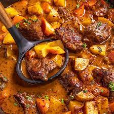

Homemade Beef Stew

Description:
A savory and delicious dish that combines beef with other vegetables
Ingredients:
- 3 tablespoons vegetable oil
- 2 pounds cubed beef stew meat
- 4 cubes beef bouillon, crumbled
- 4 cups water
- 1 teaspoon dried rosemary
- 1 teaspoon dried parsley
- 1/2 teaspoon ground black pepper
- 4 carrots, cut into 1 inch pieces
- 4 stalks celery, cut into 1 inch pieces
- 1 large onion, chopped
- 2 teaspoons cornstarch
- 2 teaspoons cold water
Steps:
- Heat oil in a large pot or Dutch oven over medium-high heat; add beef and cook until well browned.
- Dissolve bouillon in 4 cups water and pour into the pot; stir in rosemary, parsley, and pepper. Bring to a boil; reduce heat to low, cover, and simmer for 1 hour. Stir in potatoes, carrots, celery, and onion.
- Dissolve cornstarch in 2 teaspoons of cold water; stir into stew. Cover and simmer until beef is tender, about 1 hour.